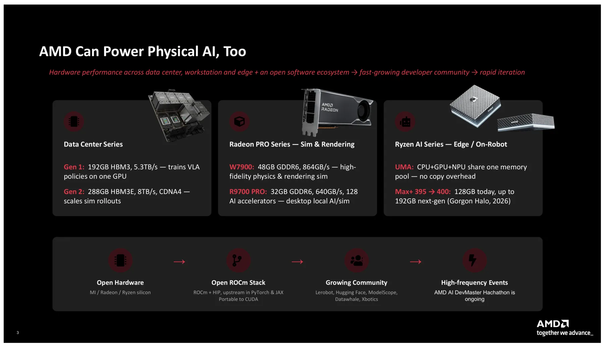
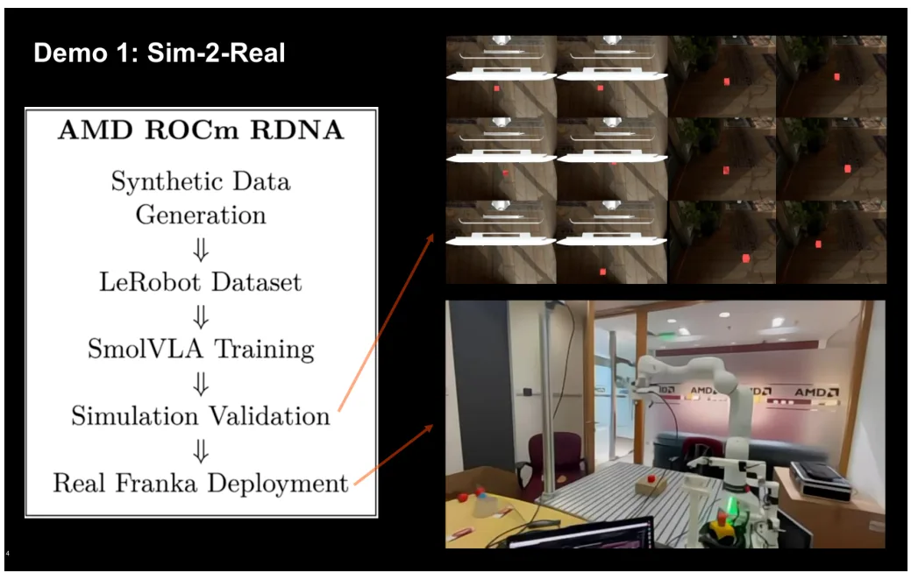
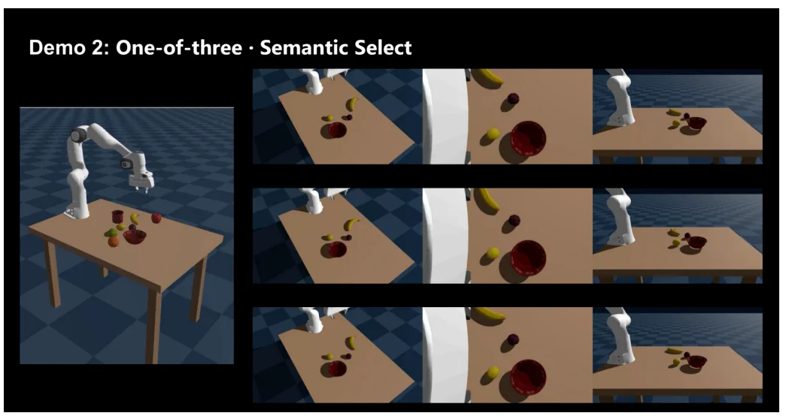
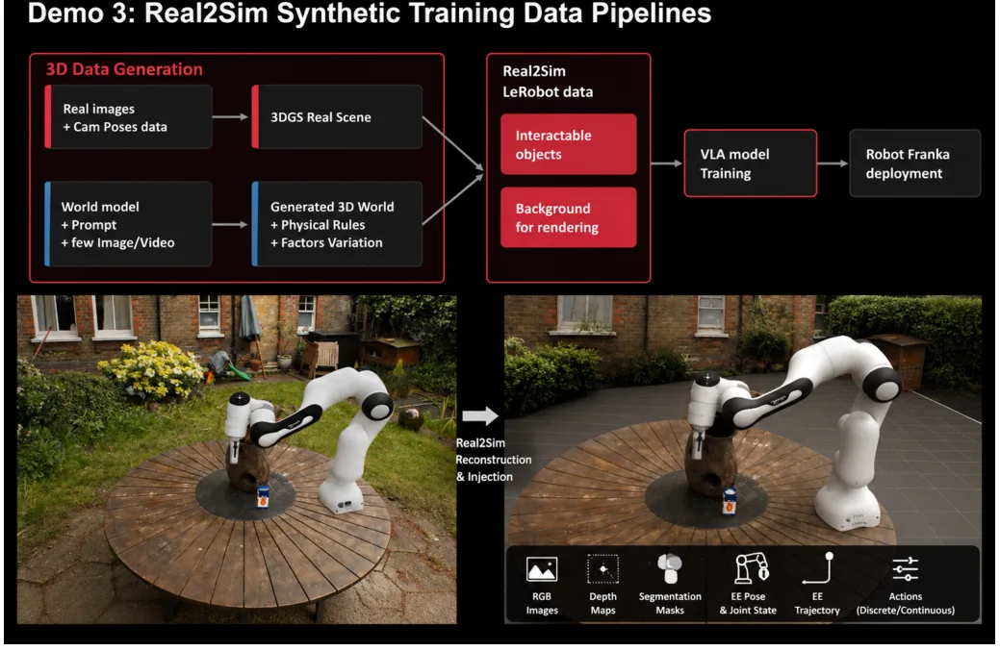
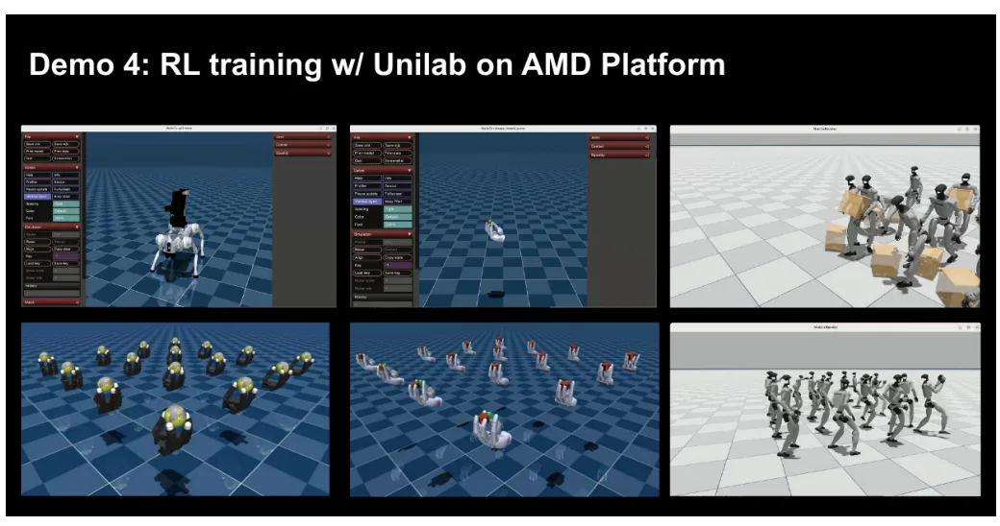
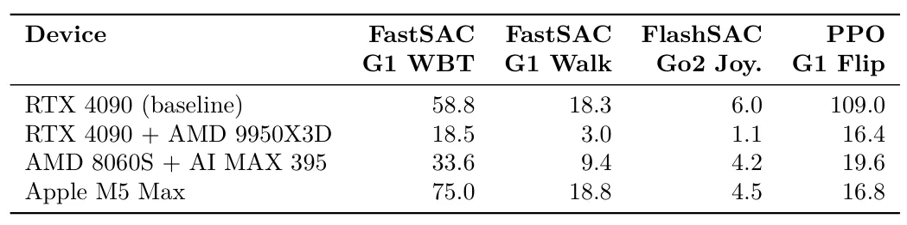

面向 VLA 操作的 Real2Sim2Real：AMD ROCm 流水线Real2Sim2Real for Vision-Language-Action Manipulation: An AMD ROCm-Based Pipeline
3DGS reconstruction 到 physics simulation 的工程链路值得关注，并覆盖真实机器人部署；论文更偏 AMD 技术栈展示，算法贡献、物理资产转换细节和可复现性需谨慎核查。
一句话工作总结
用 ROCm 串联 VLA 训练、3DGS+Genesis Real2Sim 数据生成和真实机器人部署，展示非 CUDA 锁定的 embodied pipeline。
摘要
本文给出一套面向 embodied manipulation 的端到端 AMD-accelerated technology stack，以开放 ROCm software stack 统一 data-center training、Radeon PRO simulation/rendering GPU 和 Ryzen AI edge compute，目标是证明 VLA manipulation policy 的训练与部署并不要求 CUDA-locked ecosystem。四组演示包括：以 SmolVLA 训练并部署到 Franka 的 Sim-to-Real pipeline；语言驱动的三选一对象选择；将真实场景 3D Gaussian Splatting reconstruction 与 Genesis physics engine 结合的 Real2Sim synthetic-data generation；以及跨多种硬件的大规模四足和人形 locomotion reinforcement learning。摘要称所有流程均可在 RDNA4/RDNA3.5 硬件上的 ROCm + PyTorch 原生运行。
Physical AI -- the integration of large vision-language-action (VLA) models with embodied agents that act in the real world -- has emerged as the next major frontier for AI, echoed by industry leaders such as Jensen Huang (``the next big thing is Physical AI, AI with a body,'' GTC Paris, June 2025) and Dr. Lisa Su (`we're entering the world of Physical AI ... this is where AI enters the real world,' CES 2026). This paper presents an end-to-end, fully AMD-accelerated technology stack for embodied manipulation, spanning data-center training silicon, Radeon PRO simulation/rendering GPUs, and Ryzen AI edge compute, unified by the open ROCm software stack. We demonstrate that training and deploying VLA-based manipulation policies does not require a CUDA-locked ecosystem. Four progressive demonstrations are presented: (1) a Sim-to-Real manipulation pipeline trained with SmolVLA and deployed on a physical Franka arm; (2) a semantic, language-grounded object-selection task (`one-of-three'); (3) a Real2Sim synthetic-data generation pipeline that fuses 3D Gaussian Splatting (3DGS) reconstructions of real scenes with the Genesis physics engine; and (4) large-scale reinforcement learning for quadruped and humanoid locomotion benchmarked across multiple hardware platforms. All pipelines run natively on ROCm + PyTorch on RDNA4 (Radeon AI PRO R9700) and RDNA3.5 (Radeon PRO W7900) hardware and are reproducible on the free Radeon Cloud Platform.
中文解读摘录
- 作者：Qing Yang, Xun Wang, Ziguan Wang, Zhenjiang Li, Hongqiang Wang, Dongdong Weng
- 价值判断：算法新颖性不是重点，工程信号在于用 ROCm 贯通训练、仿真和边缘部署，并把真实场景 3DGS reconstruction 接入 Genesis physics 生成 synthetic data。
- 技术要点：展示 SmolVLA 到 Franka real-robot deployment、language-grounded object selection、3DGS+Genesis Real2Sim synthetic-data generation，以及 quadruped/humanoid reinforcement learning；目标是验证非 CUDA 锁定的 embodied stack。
- 结果与边界：需区分可复现技术贡献与硬件展示，重点检查场景重建到 physics collider/material 的转换、simulator calibration、3DGS 外观与物理几何的一致性，以及跨 AMD GPU 的算子覆盖。
- 链接：arXiv · PDF
图表/页面预览
{kind=link}

{kind=link}

{kind=link}

{kind=link}

{kind=link}

{kind=link}
